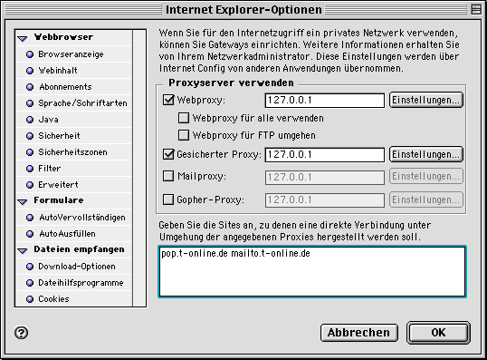
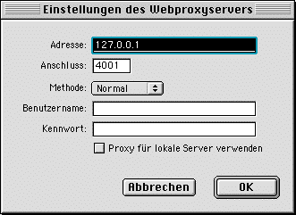
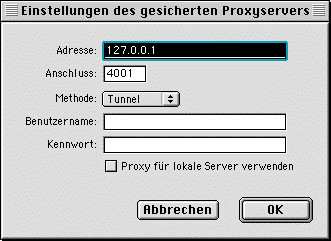

Proxy-Einstellung (Mac)
Einstellungen bei Apple Macintosh
Wir empfehlen die Verwendung des Internet Explorer. Die Einstellungen
für andere Browser ist jedoch sehr ähnlich.
- Öffnen Sie den Internet Explorer
- Wählen Sie "Bearbeiten:Optionen..."
- Im erscheinenden Fenster wählen Sie aus "Netzwerk->Proxies".
- Sie machen dann einen Haken bei folgenden Einträgen:
x Webproxy
x Gesicherter Proxy
- Für "Webproxy" wählen Sie "Einstellungen..." und tragen ein:
Adresse: 127.0.0.1
Anschluss: 4001
Methode: Normal
ggf. Haken bei "Proxy für lokale Server verwenden" (optional)
- Für "Gesicherter Proxy" wählen Sie "Einstellungen..." und tragen ein:
Adresse: 127.0.0.1
Anschluss: 4001
Methode: Tunnel
ggf. Haken bei "Proxy für lokale Server verwenden" (optional)
Screenshots


